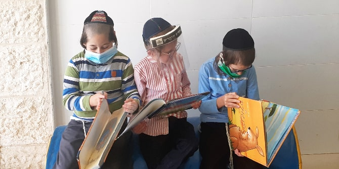
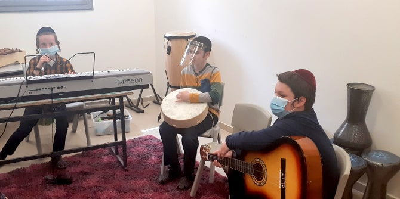

החלטת משרד הבריאות ומשרד החינוך בישראל לסגור את בתי הספר ולעבור ללמידה מרחוק השפיעה על תלמידי בית הספר וההורים בכל רחבי ישראל, ופגעה אף יותר במערכת החינוך המיוחד. במערכת זו, לא רק שתלמידים נותרו ללא תוכנית לימודים מותאמת, אלא שלרבים אין מה שיעסיק אותם בשעות אחר הצהריים והערב.
מאז 2012 מפעילה עמותת "חינוך ועתיד" רשת מוסדות להכשרה חינוכית ומקצועית במערכת החינוך החרדית, המיועדת לתלמידים עם לקויות למידה, בעיות התנהגות, הפרעות רגשיות והפרעות בתקשורת, וכן לבני נוער בסיכון, שלעתים קרובות אין להם משפחות תומכות ומגיעים לרוב מרקע סוציו-אקונומי נמוך. התלמידים במוסדות אלו הם בני 21-7. הם מחולקים לכיתות ייעודיות לפי גיל ומקבלים תוכניות חינוכיות פרטניות בהתאם לצרכים הספציפיים שלהם. המוסדות ממוקמים ברחבי הארץ, רובם באזורים שלפני כן לא זכו לטיפול הולם בתחום זה.

התפרצות נגיף קורונה וההחלטה לסגור את בתי הספר ולעבור ללמידה מרחוק הותירו תלמידים במערכת החינוך המיוחד ללא תוכנית הלימודים האישית המותאמת לגילם, המספקת את התשתית הנחוצה להתקדמות. הדבר עורר דאגה רבה, שאם תלמידים אלו לא יקבלו את הכלים והחומרים הדרושים כדי לעזור להם להתגבר על משבר הנגיף, הדבר יגדיל את הפערים החינוכיים, הרגשיים והחברתיים. נוסף על כך, הורים מצאו עצמם ללא כלים והכוונה מקצועית כיצד לטפל בילדיהם ולהעסיקם בשעות הפנאי. זה היה מאתגר במיוחד, מכיוון שרבים מהתלמידים נמצאים בסיכון גבוה להידבק בנגיף ונדרשו להישאר בבית.
כדי להקטין את השפעת המשבר במוסדותיה, פיתחה עמותת "חינוך ועתיד", שהוקמה על ידי
אלחנן ויסנשטרן, בוגר תוכנית מנדל לפיתוח מנהיגות בקהילה החרדית, תוכנית לצמצום פערים אלו במצב החירום המתמשך, וקיבלה תמיכה ליוזמה זו מקרן מנדל. הארגון הכין במהירות חומרי לימוד כדי לאפשר את המשך הלימודים עם שיבושים מעטים ככל האפשר. תוכנית לימודים מותאמת לכל תלמיד אפשרה לשיעורים להמשיך מהמקום שבו נפסקו. לכל משפחה חולקה חוברת עם מידע, תוכן חינוכי, דפי עבודה ודפי צביעה, שסיפקה לתלמידים פעילויות מועילות לשעות הפנאי שנוצרו. חומרי הלמידה הונגשו להורים באופן מקוון, ולתלמידים באמצעות דואר אלקטרוני. הוקם מוקד ייעוץ חינמי שהיה פעיל מאוד. בקו טלפון נוסף הושמעו סיפורים ותכנים אחרים, והוא סיפק פתרון להעשרת הזמן הפנוי. גם ספרים נרכשו וניתנו לתלמידים, במטרה לעודד את הקריאה ולסייע להם להמשיך ללמוד בתקופה יוצאת דופן זו. כמו כן, אתר האינטרנט של "חינוך ועתיד" שודרג במידה ניכרת, כדי לאפשר לתלמידים ולבני משפחותיהם גישה לאוסף גדול ומגוון של חומרים מקוונים.

הורים לתלמידים שקיבלו שירות מוסדות העמותה שיתפו בכמה מן ההתנסויות שלהם במהלך תקופה קשה זו, ותיארו כיצד בתי הספר של "חינוך ועתיד" עזרו להם ולילדיהם להתמודד:
אמא של יוסי, 10, תלמיד עם הפרעות התנהגותיות ורגשיות מספרת:
"בכל יום היינו יושבים כל בני המשפחה ושומעים מה היו הנושאים החווייתיים שהושמעו בשירות הטלפוני של העמותה. בכל יום הייתה רויטל – היועצת הרגשית של בית הספר – משאירה טיפים לתרגילי הרפיה, ובזכות תרגילים אלו הצלחתי להרפות ולהרגיע את עצמי ואת יוסי בזמני התפרצויותיו, כדי לצלוח את תקופת המשבר בהצלחה, תודה רבה לכם!"
אבא של אברמי, 15, תלמיד עם מוגבלות שכלית התפתחותית, מספר:
"בזכות הספרים שקיבלתנו לקריאה משותפת עם ההורים, זכיתי לשבת ולהכיר הרבה יותר טוב את בני היקר, את יכולותיו, עוצמותיו ובעיקר את ההומור הטמון בו, שלא יצא לי כל כך להכיר. צחקנו כל כך הרבה יחד בזמן המשבר. תודה לכם על יוזמתכם הנפלאה."
חיה, אמא לילד עם צרכים מיוחדים, פנתה לקו הייעוץ כדי לשוחח עם פסיכולוגית בית הספר. היא מספרת:
"בני עם בעיות מוטוריות לא קלות. ערב אחד הייתי זקוקה לייעוץ דחוף בבעיה שנתקלתי בה עם בני. הרמתי טלפון לקו הייעוץ, שם קבלת ייעוץ והכוונה מדהימים! יישמתי עצות אלו לאורך תקופת המשבר, וכשבני חזר ללימודיו, עדכנו אותי שיש שיפור משמעותי במיומנות המוטוריקה העדינה שלו! לא הייתי מצליחה לקדמו לולא ייעוצכם החשוב, תודה רבה!"
{kind=link}
{kind=link}